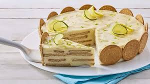
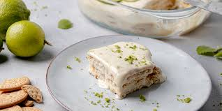
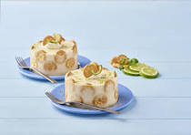

CARLOTA DE LIMON

TEXTURA
La textura de una carlota de limón es suave, cremosa y con un contraste crujiente aportado por las galletas. La consistencia final del postre depende del tiempo de refrigeración.
SABOR
El sabor de la carlota de limón es una combinación refrescante y cremosa de acidez cítrica y dulzura láctea. Es un postre frío que no requiere horno y se prepara con pocos ingredientes.
PRESENTACION
Una carlota de limón es un postre frío, fácil de preparar y con una textura cremosa que contrasta con las capas de galletas. Su presentación puede variar, pero siempre busca destacar su frescura y sabor cítrico.
TIPOS
Carlota de 🍋 limón. Guarda esta receta para encontrarla más fácilmente cuando la quieras cocinar. ... Carlota de piña colada 🍍🥥 ... Carlota de limón. ... Carlota de limón con café ... Carlota de limón. ... Carlota de limón. ... Carlota de limón 🍋💛 ... Carlota de mango.
| TIPOS/VARIACIONES | DESCRIPCION | ASPECTO |
| CARLOTA DE LIMON | postre frío mexicano, refrescante y muy popular, que se elabora sin necesidad de usar un horno. Se caracteriza por sus capas alternadas de galletas y una crema de limón con una textura suave y sedosa. | El aspecto de la carlota de limón es el de un postre frío, de consistencia cremosa |
| Carlota clásica con leche evaporada | Postre ligero y espumoso, con un sabor agridulce refrescante. La crema se forma al mezclar leche condensada | Presenta capas bien definidas de crema blanquecina y galletas Marías, que se ablandan al refrigerarse |

|